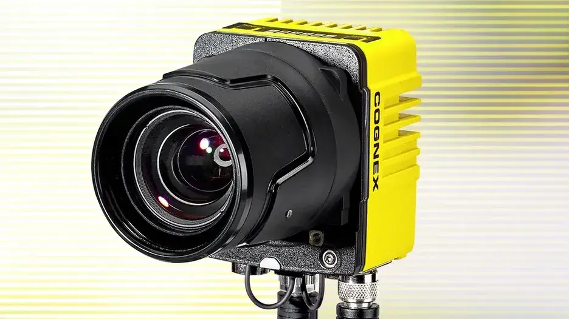

고속 처리
빠른 생산라인에서 영상 취득과 검사 처리 시간을 줄여 설비 처리량 확보를 지원합니다.
2D Vision · Area Scan
고속 처리와 고해상도 영상에 AI Edge Learning과 룰 기반 도구를 결합한 Area Scan 2D 비전 시스템입니다.

01 · Overview
In-Sight 3800은 고속 생산라인에서 제품 전체를 한 번에 촬영하는 Area Scan 방식의 2D 머신비전 시스템입니다. 고속 처리와 고해상도 이미징, AI 기반 Edge Learning과 룰 기반 비전 도구를 하나의 플랫폼에서 사용해 다양한 검사 난이도에 대응합니다.
5MP, 8MP, 12MP 센서 구성과 렌즈·조명 옵션을 검사 범위, 최소 결함 크기와 택타임에 맞춰 검토할 수 있습니다.
02 · Key Features
빠른 생산라인에서 영상 취득과 검사 처리 시간을 줄여 설비 처리량 확보를 지원합니다.
검사 범위와 필요한 최소 결함 크기에 따라 5MP, 8MP, 12MP 센서 구성을 검토합니다.
Edge Learning과 전통적인 비전 도구를 조합해 불규칙한 결함과 정형 검사를 함께 구성합니다.
03 · Application Fit
스크래치, 이물, 형상 편차 등 표면과 외관의 품질 이상을 판별하는 공정입니다.
부품 누락, 조립 상태, 방향과 위치를 빠르게 확인해야 하는 생산라인입니다.
라벨, 날짜, LOT와 각인 문자를 읽고 인쇄 상태까지 검증하는 공정입니다.
04 · Specification Guide
제품 선정에 앞서 아래 항목을 기준으로 검사 조건과 옵션을 확인합니다.
독립 실행형 Area Scan 2D 머신비전 시스템
AI Edge Learning, 룰 기반 도구, In-Sight Vision Suite
해상도, FOV, WD, 택타임, 렌즈, 조명과 통신 방식
적용 모델 및 옵션에 따라 상이합니다. 해상도, 렌즈, 조명, 통신과 세부 사양은 검사 대상 및 설치 조건을 확인한 뒤 문의 바랍니다.
05 · Inspection Tasks
06 · ASPEC Engineering
단품 공급만이 아니라 실제 생산라인에서 안정적으로 작동하도록 광학계, 제어와 소프트웨어를 함께 구성합니다.
07 · References & Related Products
ASPEC의 AI·OCR·바코드·정렬 검사 사례에서 검사 방식과 시스템 구성 방향을 확인할 수 있습니다. 공개 사례는 특정 제품 모델 사용을 의미하지 않으며 실제 모델은 현장 조건에 따라 선정합니다. 구축사례 라이브러리 보기
08 · FAQ
범용 검사와 간편한 구성이 중심이면 2800을 먼저 검토하고, 더 높은 처리 속도와 해상도가 필요한 고난도 검사라면 3800을 함께 비교합니다.
In-Sight 3800은 5MP, 8MP, 12MP 센서 구성을 검토할 수 있습니다. 검사 범위, 최소 결함 크기, 작업 거리와 렌즈 조건을 계산해 모델을 선정합니다.
Edge Learning과 패턴 매칭, 측정, 위치 판정 같은 룰 기반 도구를 검사 목적에 맞춰 조합할 수 있습니다.
09 · Project Inquiry
검사 대상, FOV, WD, 택타임, 불량 유형을 알려주시면 카메라·렌즈·조명과 시스템 구성을 함께 검토해드립니다.